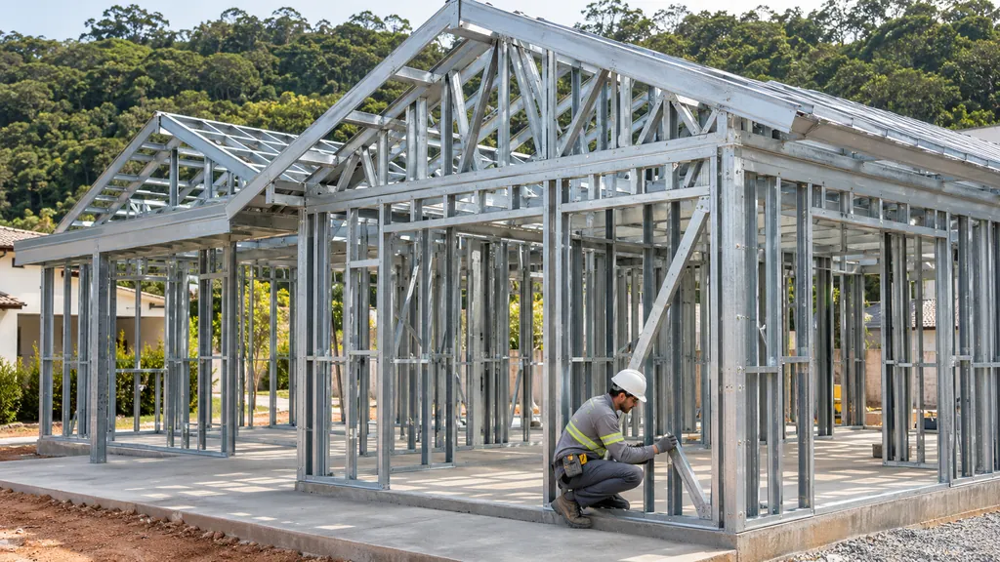

Arquitetura para viver em paisagem
A casa começa pelo lugar.
Casas e chalés em Light Steel Frame, desenhados para o terreno e o jeito de viver de cada pessoa.
Como funciona
-
O terreno
Antes de qualquer desenho, olhamos para o lugar: relevo, sol, vista, acesso e entorno.
-
O projeto
A casa é desenhada a partir do terreno e da rotina de quem vai morar, com as decisões tomadas antes da obra.
-
A construção
A estrutura em Light Steel Frame é montada no terreno seguindo o projeto, etapa por etapa.
Casas e chalés para diferentes paisagens
-
 Chalé
Chalé
Chalé A-frame
Telhado em duas águas até o chão, fachada envidraçada e deck de madeira.
Ver no catálogo -
 Casa
Casa
Casa contemporânea
Volume horizontal, varanda coberta ao longo da fachada e beiral em madeira.
Ver no catálogo -
 Casa
Casa
Casa familiar
Volumes sobrepostos, revestimento em madeira e varanda voltada para o jardim.
Ver no catálogo
Uma estrutura leve de aço, montada a partir do projeto.
Perfis de aço galvanizado formam o esqueleto da casa: paredes, pisos e telhado. Depois vêm as camadas de fechamento, isolamento e acabamento, cada uma com a sua função.
Entenda o sistema
Conte onde fica o seu lugar.
Fale sobre o terreno, a cidade e o que você imagina para a casa. A conversa começa por aí.
Falar com a Lucerna